Graphical abstracts of latest research work.
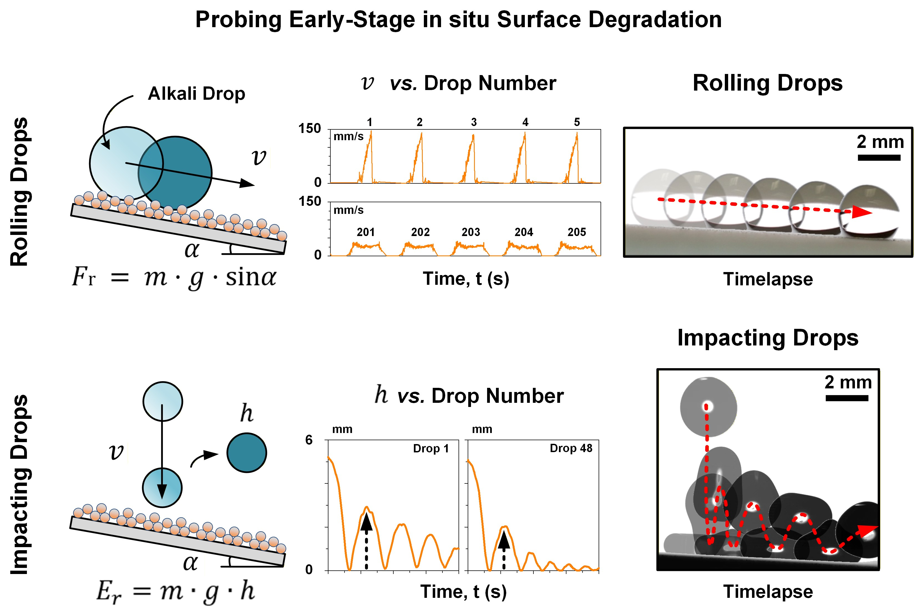
Advanced Functional Materials · 2026
Super liquid-repellent surfaces are increasingly deployed in harsh environments, including marine electronics, electrochemistry, and microfluidics. However, prolonged exposure to corrosive or reactive media causes progressive surface degradation that compromises performance. Conventional evaluation methods based on immersion and time-resolved studies, are coarse, discontinuous, and susceptible to bias due to the heterogeneous nature of degradation. Here, two continuous, drop-based force-probing techniques are introduced for in situ assessment of surface degradation by analyzing the dynamics of rolling and impacting caustic drops. As degradation intensifies, rolling drops decelerate due to increasing retention forces, while impacting drops rebound less due to increasing surface-induced energy dissipation. Rolling and impacting drops resolve retention forces and energy at resolutions of ≈0.1 µN and ≈1 µJ, respectively. These techniques are benchmarked on three metal oxide-based superhydrophobic surfaces: a commercial silica-based surface (Glaco), a perfluoroalkylated silica-based surface, and a newly developed fluoro-free, hydrocarbon-functionalized silicate-titania surface. Despite similar apparent wetting properties (contact angle, CA > 150°, sliding angle, SA < 10°), these surfaces degrade at rates that differ by up to an order of magnitude in both differential retention forces and energy dissipation under identical caustic exposure. Accordingly, these methods provide a robust, generalizable, high-precision platform for advancing the design of chemically-durable (super) liquid-repellent materials.
Read full paper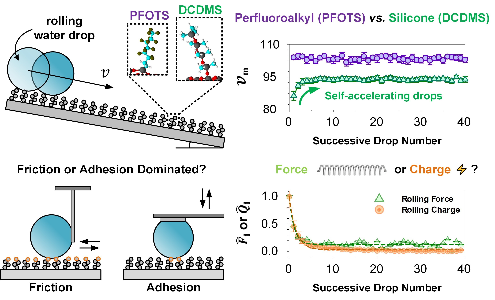
ACS Nano · 2025
Design of super liquid-repellent surfaces has relied on an interplay between surface topography and surface energy. Perfluoroalkylated materials are often used, but they are environmentally unsustainable and notorious for building up static charge. Therefore, there is a need for understanding the performance of sustainable low surface energy materials with antistatic properties. Here, we explore drop interactions with perfluoroalkyl- and silicone-based surfaces, focusing on three modes of drop-to-surface interactions. The behavior of drops rolling under gravity is compared to those subjected to lateral and normal forces under constant slide (i.e., friction) and detachment (i.e., adhesion) velocities. We demonstrate that a drop’s characteristic and dynamic mobility depends on surface chemistry, with sequential drop interactions being particularly affected. By utilizing force-and-charge instruments, we show how rolling drops are primarily governed by adhesion and its associated electrostatic effects, instead of friction. Perfluoroalkylated surfaces continuously accumulate charges, while silicone surfaces rapidly saturate. Consequently, sequentially contacting drops accumulate significant charges on the former while rapidly diminishing on the latter. The drop charge suppressing behavior of silicones enhances drop mobility despite their higher surface energy compared to perfluoroalkyls. Quantum mechanical density functional theory calculations show significant differences in surface charge distributions at the atomic level. Simulations suggest that variations in the lifetimes of surface hydroxyl ions likely drive the markedly different drop charging behaviors. Our findings demonstrate the critical role of surface chemistry and its coupled electrostatics in drop mobility, providing valuable insights for designing environmentally friendly, antistatic, super liquid-repellent surfaces.
Read full paper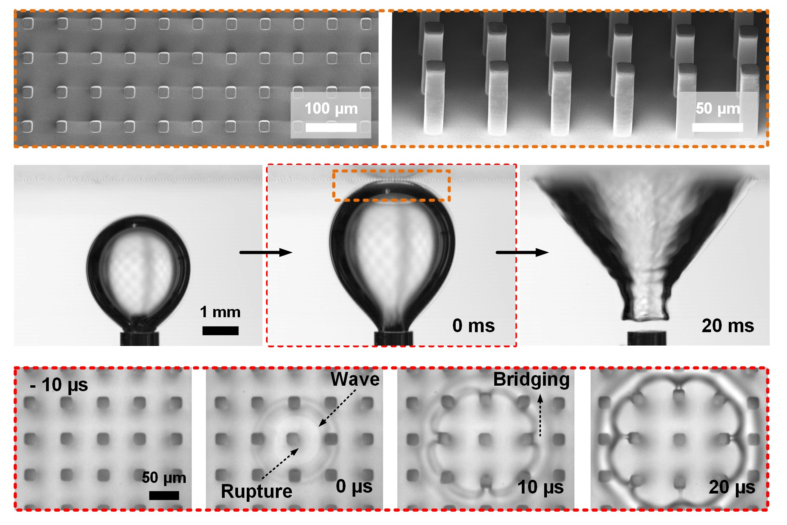
Advanced Science · 2024
Bubbles and foams are often removed via chemical defoamers and/or mechanical agitation. Designing surfaces that promote chemical-free and energy-passive bubble capture is desirable for numerous industrial processes, including mineral flotation, wastewater treatment, and electrolysis. When immersed, super-liquid-repellent surfaces form plastrons, which are textured solid topographies with interconnected gas domains. Plastrons exhibit the remarkable ability of capturing bubbles through coalescence. However, the two-step mechanics of plastron-induced bubble coalescence, namely, rupture (initiation and location) and subsequent absorption (propagation and drainage) are not well understood. Here, the influence of 1) topographical feature size and 2) gas fraction on bubble capture dynamics is investigated. Smaller feature sizes accelerate rupture while larger gas fractions markedly improve absorption. Rupture is initiated solely on solid domains and is more probable near the edges of solid features. Yet, rupture time becomes longer as solid fraction increases. This counterintuitive behavior represents unexpected complexities. Upon rupture, the bubble's moving liquid-solid contact line influences its absorption rate and equilibrium state. These findings show the importance of rationally minimizing surface feature sizes and contact line interactions for rapid bubble rupture and absorption. This work provides key design principles for plastron-induced bubble coalescence, inspiring future development of industrially-relevant surfaces for underwater bubble capture.
Read full paper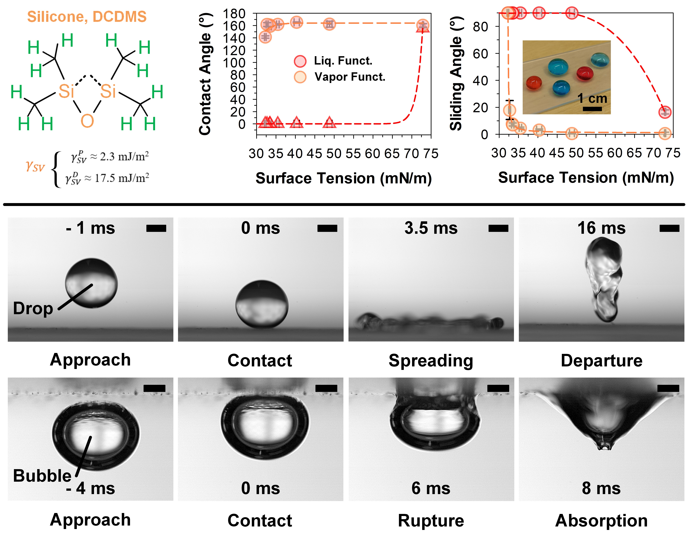
Advanced Materials · 2023
Super-liquid-repellent surfaces feature high liquid contact angles and low sliding angles find key applications in anti-fouling and self-cleaning. While repellency for water is easily achieved with hydrocarbon functionalities, repellency for many low-surface-tension liquids (down to 30 mN/m) still requires perfluoroalkyls (a persistent environmental pollutant and bioaccumulation hazard). Here, the scalable room-temperature synthesis of stochastic nanoparticle surfaces with fluoro-free moieties is investigated. Silicone (dimethyl and monomethyl) and hydrocarbon surface chemistries are benchmarked against perfluoroalkyls, assessed using model low-surface-tension liquids (ethanol–water mixtures). It is discovered that both hydrocarbon- and dimethyl-silicone-based functionalization can achieve super-liquid-repellency down to 40–41 mN/m and 32–33 mN/m, respectively (vs 27–32 mN/m for perfluoroalkyls). The dimethyl silicone variant demonstrates superior fluoro-free liquid repellency likely due to its denser dimethyl molecular configuration. It is shown that perfluoroalkyls are not necessary for many real-world scenarios requiring super-liquid-repellency. Effective super-repellency of different surface chemistries against different liquids can be adequately predicted using empirically verified phase diagrams. These findings encourage a liquid-centric design, i.e., tailoring surfaces for target liquid properties. Herein, key guidelines are provided for achieving functional yet sustainably designed super-liquid-repellency.
Read full paper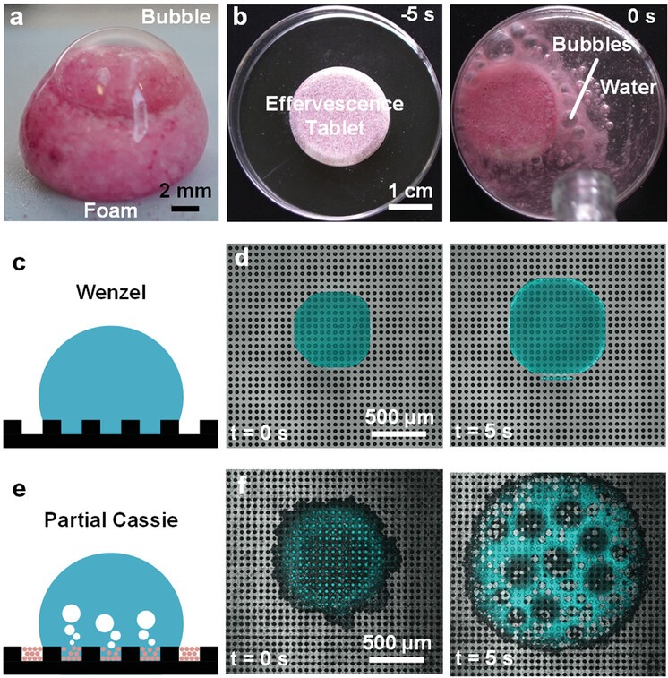
Advanced Functional Materials · 2022
The use of superhydrophobic/superamphiphobic surfaces demands the presence of a stable plastron, i.e., a film of air between micro- and nanostructures. Without actively replenishing the plastron with gases, it eventually disappears during immersion. The air diffuses into the immersion liquid, i.e., water. Current methods for sustaining the plastron under immersion remain limited to techniques such as electrocatalysis, electrolysis, boiling, and air-refilling. These methods are difficult to implement at scale, are either energy-consuming, or require continuous monitoring of the plastron (and subsequent intervention). Here, the concept of passive on-demand recovery of the plastron via the use of a chemical reaction (effervescence) is presented. A superhydrophobic nanostructured surface is layered onto a wetting-reactive, gas-forming (effervescent) sublayer. During extended exposure to moisture, the effervescent layer must be protected by a moisture-absorbent, water-soluble polymer. Under prolonged immersion, partial collapse of the Cassie-state induces contact of water with the effervescent layer. This induces the local formation of gases from effervescence, which restores the Cassie-state. These facile and scalable design principles offer a new route toward intervention-free and immersion-durable superhydrophobic/superamphiphobic surfaces.
Read full paper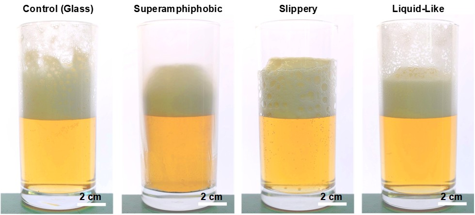
Nature Communications · 2021
Wet and dry foams are prevalent in many industries, ranging from the food processing and commercial cosmetic sectors to industries such as chemical and oil-refining. Uncontrolled foaming results in product losses, equipment downtime or damage and cleanup costs. To speed up defoaming or enable anti-foaming, liquid oil or hydrophobic particles are usually added. However, such additives may need to be later separated and removed for environmental reasons and product quality. Here, we show that passive defoaming or active anti-foaming is possible simply by the interaction of foam with chemically or morphologically modified surfaces, of which the superamphiphobic variant exhibits superior performance. They significantly improve retraction of highly stable wet foams and prevention of growing dry foams, as quantified for beer and aqueous soap solution as model systems. Microscopic imaging reveals that amphiphobic nano-protrusions directly destabilize contacting foam bubbles, which can favorably vent through air gaps warranted by a Cassie wetting state. This mode of interfacial destabilization offers untapped potential for developing efficient, low-power and sustainable foam and froth management.
Read full paper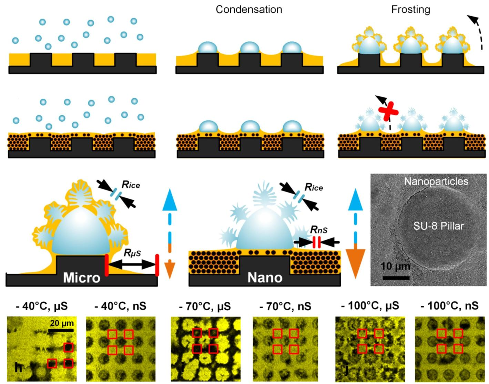
Nano Letters · 2020
Slippery lubricant-infused surfaces (SLIPS) have shown great promise for anti-frosting and anti-icing. However, small length scales associated with frost dendrites exert immense capillary suction pressure on the lubricant. This pressure depletes the lubricant film and is detrimental to the functionality of SLIPS. To prevent lubricant depletion, we demonstrate that interstitial spacing in SLIPS needs to be kept below those found in frost dendrites. Densely packed nanoparticles create the optimally sized nanointerstitial features in SLIPS (Nano-SLIPS). The capillary pressure stabilizing the lubricant in Nano-SLIPS balances or exceeds the capillary suction pressure by frost dendrites. We term this concept capillary balancing. Three-dimensional spatial analysis via confocal microscopy reveals that lubricants in optimally structured Nano-SLIPS are not affected throughout condensation, extreme frosting, and traverse ice-shearing tests. These surfaces preserve low ice adhesion over 50 icing cycles, demonstrating a design principle for next-generation anti-icing surfaces.
Read full paper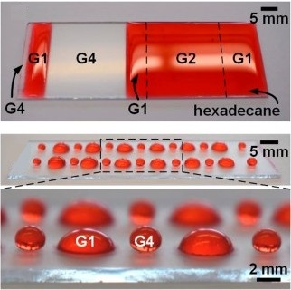
Nano Letters · 2019
Super-hydrophobic, super-oleo(amphi)phobic, and super-omniphobic materials are universally important in the fields of science and engineering. Despite rapid advancements, gaps of understanding still exist between each distinctive wetting state. The transition of super-hydrophobicity to super-(oleo-, amphi-, and omni-)phobicity typically requires the use of re-entrant features. Today, re-entrant geometry induced super-(amphi- and omni-)phobicity is well-supported by both experiments and theory. However, owing to geometrical complexities, the concept of re-entrant geometry forms a dogma that limits the industrial progress of these unique states of wettability. Moreover, a key fundamental question remains unanswered: are extreme surface chemistry enhancements able to influence super-liquid repellency? Here, this was rigorously tested via an alternative pathway that does not require explicit designer re-entrant features. Highly controllable and tunable vertical network polymerization and functionalization were used to achieve fluoroalkyl densification on nanoparticles. For the first time, relative fluoro-functionalization densities are quantitatively tuned and correlated to super-liquid repellency performance. Step-wise tunable super-amphiphobic nanoparticle films with a Cassie–Baxter state (contact angle of >150° and sliding angle of <10°) against various liquids is demonstrated. This was tested down to very low surface tension liquids to a minimum of ca. 23.8 mN/m. Such findings could eventually lead to the future development of super-(amphi)omniphobic materials that transcend the sole use of re-entrant geometry.
Read full paper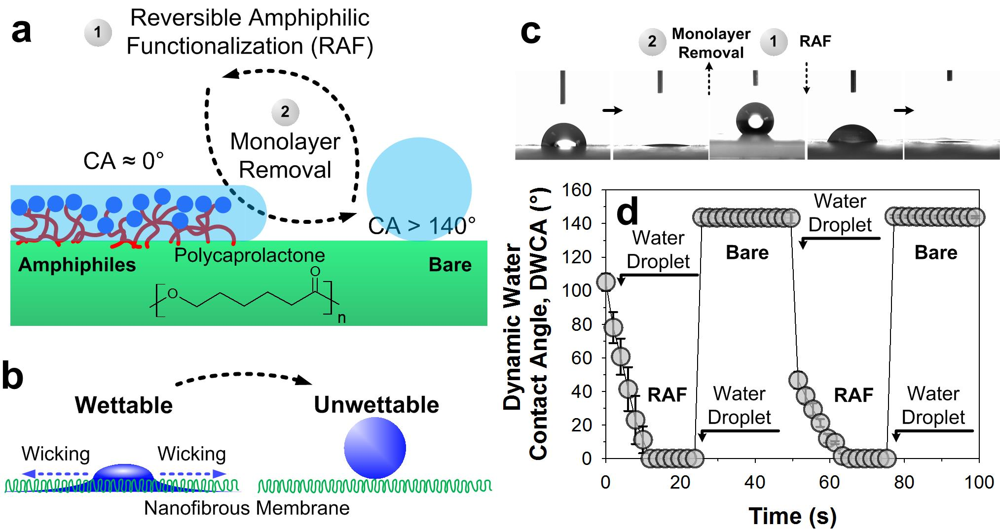
Advanced Functional Materials · 2018
In nature, cellular membranes perform critical functions such as endocytosis and exocytosis through smart fluid gating processes mediated by nonspecific amphiphilic interactions. Despite considerable progress, artificial fluid gating membranes still rely on laborious stimuli-responsive mechanisms and triggering systems. In this study, a room temperature gas-phase approach is presented for dynamically switching a porous material from a superhydrophobic to a superhydrophilic wetting state and back. This is realized by the reversible attachment of bipolar amphiphiles, which promote surface wetting. Application of this reversible amphiphilic functionalization to an impermeable nanofibrous membrane induces a temporary state of superhydrophilicity resulting in its pressure-less permeation. This mechanism allows for rapid smart fluid gating processes that can be triggered at room temperature by variations in the environment of the membrane. Owing to the universal adsorption of volatile amphiphiles on surfaces, this approach is applicable to a broad range of materials and geometries enabling facile fabrication of valve-less flow systems, fluid-erasable microfluidic arrays, and sophisticated microfluidic designs.
Read full paper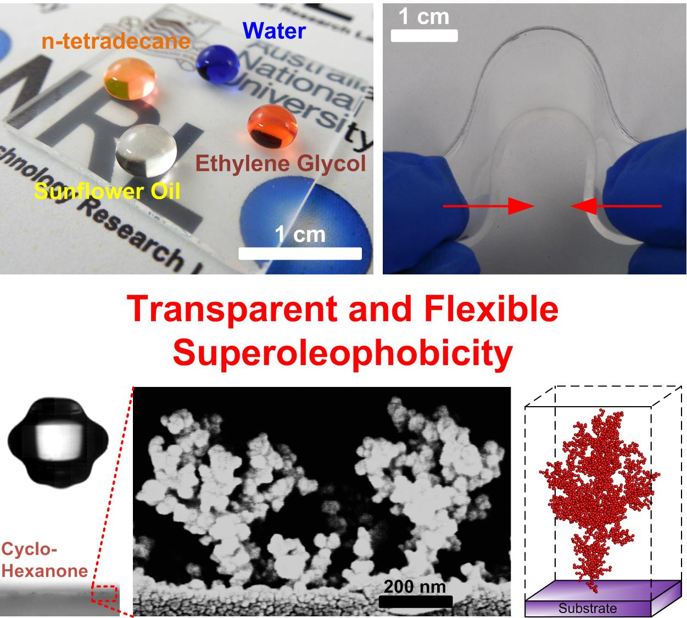
ACS Nano · 2017
Engineering surface textures that are highly transparent and repel water, oil, and other low surface energy fluids can transform our interaction with wet environments. Despite extensive progress, current top-down methods are based on directional line-of-sight fabrication mechanisms that are limited by scale and cannot be applied to highly uneven, curved, and enclosed surfaces, while bottom-up techniques often suffer from poor optical transparency. Here, we present an approach that enables the rapid, omnidirectional synthesis of flexible and up to 99.97% transparent superhydrophobic and -oleophobic textures on many variable surface types. These features are obtained by the spontaneous formation of a multi re-entrant morphology during the controlled self-assembly of nanoparticle aerosols. We also develop a mathematical model to explain and control the self-assembly dynamics, providing important insights for the rational engineering of functional materials. We envision that our findings represent a significant advance in imparting superoleophobicity and superamphiphobicity to a so-far inapplicable family of materials and geometries for multifunctional applications.
Read full paper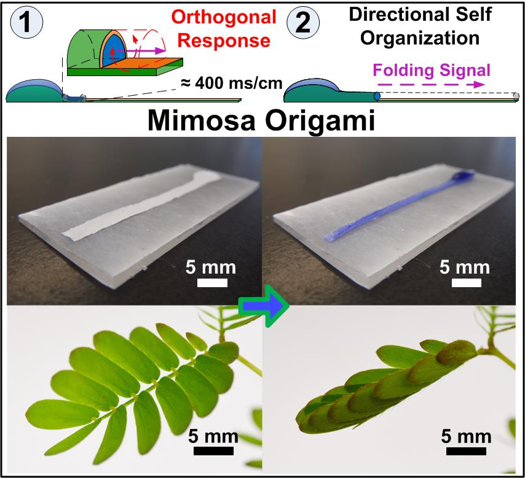
Science Advances · 2016
One of the innate fundamentals of living systems is their ability to respond toward distinct stimuli by various self-organization behaviors. Despite extensive progress, the engineering of spontaneous motion in man-made inorganic materials still lacks the directionality and scale observed in nature. We report the directional self-organization of soft materials into three-dimensional geometries by the rapid propagation of a folding stimulus along a predetermined path. We engineer a unique Janus bilayer architecture with superior chemical and mechanical properties that enables the efficient transformation of surface energy into directional kinetic and elastic energies. This Janus bilayer can respond to pinpoint water stimuli by a rapid, several-centimeters-long self-assembly that is reminiscent of the Mimosa pudica’s leaflet folding. The Janus bilayers also shuttle water at flow rates up to two orders of magnitude higher than traditional wicking-based devices, reaching velocities of 8 cm/s and flow rates of 4.7 μl/s. This self-organization regime enables the ease of fabricating curved, bent, and split flexible channels with lengths greater than 10 cm, demonstrating immense potential for microfluidics, biosensors, and water purification applications.
Read full paper